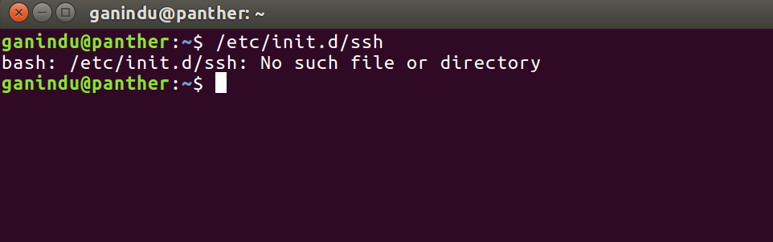
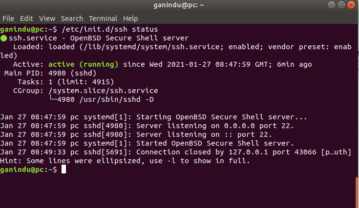

For our projects we will need to communicate with target hardware in various ways. Here we wil discuss using shell and HDMI cable.
First we check if our target has a SSH server running, Usually you can SSH into a factory Jetson device and get started straight away. Here I’ve used ubuntu running on kernel 4.15.0-132-generic ( you can check by typing uname -r into the shell )
If a server is not installed there won’t be a /etc/init.d/ssh directory.

If ssh server installed you can test the status by /etc/init.d/ssh status

Note: If you don’t have SSH working on the target you won’t be able to tunnel into the device, therefore use the commendline sudo apt install openssh-server or use a package manager like synaptic.
Before connecting we need to know the IP address, username and the password for the host. Also a quick word about my setup.